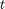
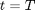
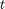
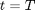
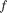
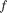

Spot Rate to Zero Coupon Bond
The class returns zero coupon bond prices from spot rates.
Contents
%MATLAB CODE %%%%%%%%%%%%%%%%%%%%%%%%%%%%%%%%%%%%%%%%%%%%%%%%%%%%%%%%%%%%%%%%%%%%%%%%%%% classdef bootstrap_SpottoZCB < prursg.Bootstrap.BaseBootstrapAlgorithm
How to Use the Class
Given an input spot rate data series we calculate a zero coupon bond series with the output frequency given by [outputfreq].
Properties
Input Data Series
[InputSpotRates] -  , spot rates at time, , paying at maturity, .
, spot rates at time, , paying at maturity, .
Data Type: data series
Input Parameters [outputfreq] - A string that lists the number of monthly, quarterly, semi-annual and annual intervals.
Data Type: string
%MATLAB CODE %%%%%%%%%%%%%%%%%%%%%%%%%%%%%%%%%%%%%%%%%%%%%%%%%%%%%%%%%%%%%%%%%%%%%%%%%%% properties % Data Series InputSpotRates = []; % Parameters outputfreq = []; end %%%%%%%%%%%%%%%%%%%%%%%%%%%%%%%%%%%%%%%%%%%%%%%%%%%%%%%%%%%%%%%%%%%%%%%%%%%
List of Methods
The class introduces one method:
bootstrap_SpottoZCB () - Function returns a data series of zero coupon bond (ZCB) prices,  , with a given output frequency profile. The ZCB prices are derived from an input of spot rates, , with compounding frequency, .
, with a given output frequency profile. The ZCB prices are derived from an input of spot rates, , with compounding frequency, .
%MATLAB Code %%%%%%%%%%%%%%%%%%%%%%%%%%%%%%%%%%%%%%%%%%%%%%%%%%%%%%%%%%%%%%%%%%%%%%%%%%% methods
% Constructor function obj = bootstrap_SpottoZCB () obj = obj@prursg.Bootstrap.BaseBootstrapAlgorithm(); end %%%%%%%%%%%%%%%%%%%%%%%%%%%%%%%%%%%%%%%%%%%%%%%%%%%%%%%%%%%%%%%%%%%%%%%%%%%
ans =
Bootstrap.bootstrap_SpottoZCB handle
Package: Bootstrap
Properties:
InputSpotRates: []
outputfreq: []
Details of Methods
Description
Function returns a data series of zero coupon bond (ZCB) prices, , with a given output frequency profile, [outputfreq]. The ZCB prices are derived from an input of spot rates, [InputSpotRates], with compounding frequency, .
Inputs
[InputSpotRates] - , spot rates at time, , paying at maturity, .
Data Type: data series
[outputfreq] - A string that lists the number of monthly, quarterly, semi-annual and annual intervals.
Data Type: string
Outputs
A yield curve of zero coupon bond prices in accordance with the output frequency profile.
Calculations
Sort and clone the input data.
The next step is to identify and set up the output frequency profile which specifies the frequency of outputs e.g. annually or monthly etc.
Depending whether we have continuous or annual compounding the zero coupon bond prices are calculated using:
i) Continuous Compounding
$$ B(t,T) = e^{[t-T].S(t,T) $$
Unable to interpret LaTeX string "$$ B(t,T) = e^{[t-T].S(t,T) $$"where
: Spot rate at time, , paying at maturity, .
: The price of a zero coupon bond at time, , which pays 1 at maturity, .
or
ii) Annual Compounding
$$ B(t,T) = (1+\frac{S(t,T){f})^{(t-T).f} $$
Unable to interpret LaTeX string "$$ B(t,T) = (1+\frac{S(t,T){f})^{(t-T).f} $$"with
: Compounding annual frequency.
Finally the data series properties are updated.
%MATLAB Code %%%%%%%%%%%%%%%%%%%%%%%%%%%%%%%%%%%%%%%%%%%%%%%%%%%%%%%%%%%%%%%%%%%%%%%%%%% % Methods function results = Bootstrap(obj, DataSeriesIn) newSortDataSeries=Bootstrap.BsSort(); obj.InputSpotRates =newSortDataSeries.SortDataSeries ... (DataSeriesIn(1).Clone); maxTerm = obj.InputSpotRates.axes(1).values{1, end}; BsfrequencyprofileObject =Bootstrap.Bsfrequencyprofile... (obj.outputfreq,maxTerm); outputfreqProfile = ... BsfrequencyprofileObject.AdjustedIntervalArray; SpotRates_Temp = ... BsfrequencyprofileObject.SmallerDataSeriesObject... (outputfreqProfile,obj.InputSpotRates); results = SpotRates_Temp ; for i = 1: size(results.dates, 1) Maturity =cell2mat(SpotRates_Temp.axes(1).values); if strcmp(obj.InputSpotRates.compounding, 'cont') results.values{i} = exp(-Maturity.*... results.values{i}); elseif strcmp(obj.InputSpotRates.compounding, 'ann') results.values{i} = (1 + results.values{i}).^... ( -obj.InputSpotRates.compoundingfrequency.*... Maturity ); end end results.Name = ''; results.source ='iMDP'; results.ticker= 'na'; results.description = 'derived ZCBtoSpotmethod'; results.ratetype = 'zcb'; results.compounding ='na'; results.compoundingfrequency= 'na'; results.daycount ='na'; results.units ='absolute'; end
end
end